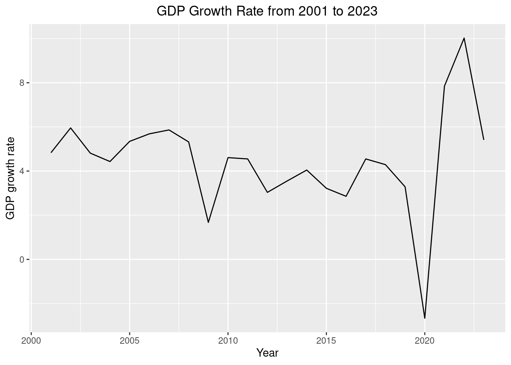
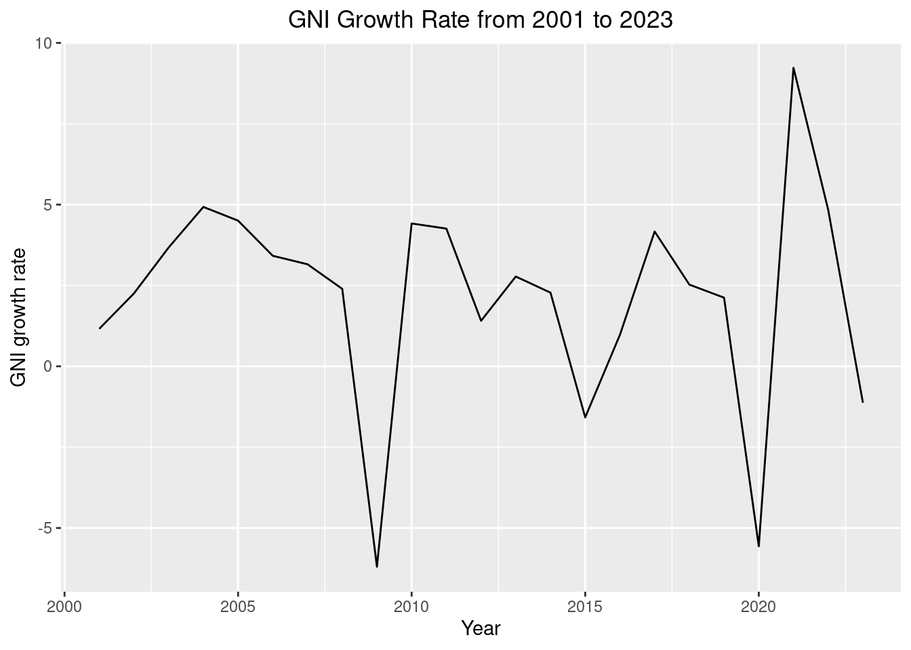
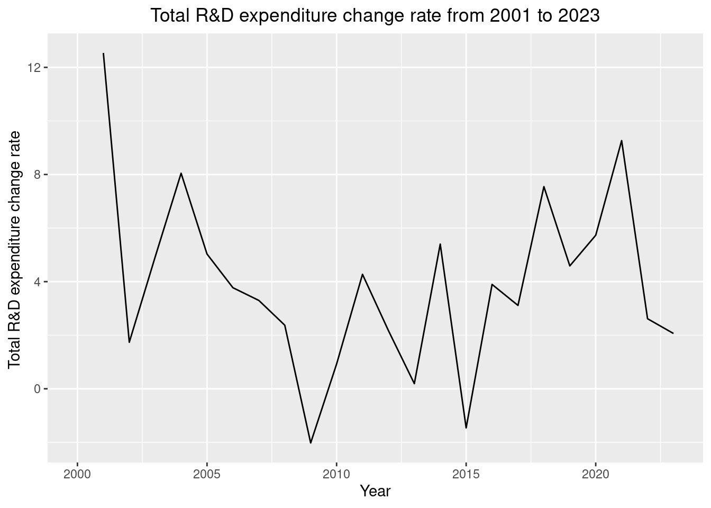

| Year | Total Expenditure (million CA $) | Change in Total Expenditure (million CA $) | Change rate in total expenditure (%) |
|---|---|---|---|
| 2000 | 814516 | NA | NA |
| 2001 | 853863 | 39347 | 4.830722 |
| 2002 | 904699 | 50836 | 5.953648 |
| 2003 | 948231 | 43532 | 4.811766 |
| 2004 | 990250 | 42019 | 4.431304 |
| 2005 | 1043178 | 52928 | 5.344913 |
Exploring the Relationship between R&D Expenditure and Economic Growth.
: An Investigation of GNI and GDP Growth with R&D Expenditure in Canadian Data from 2001 to 2022
Abstract
First sentence. Second sentence. Third sentence. Fourth sentence.
1 Introduction
Since the beginning of the 21st century, various technological revolutions have occurred in diverse industries worldwide. This has underscored the importance of investment in scientific technology, leading not only OECD countries but also nations globally to prioritize scientific technological investment. A significant aspect of scientific technological investment is expenditure. Among these, annual R&D budgets signify a country’s dedication to scientific technological investment. Despite the OECD’s average R&D expenditure as a percentage of total GDP showing a slightly lower percentage of 2.718% in 2022 compared to 2.741% in 2021, it has exhibited a steady upward trend since 2000. This indicates that OECD countries are increasingly recognizing the importance of R&D and steadily increasing their investment.
This study aims to investigate the relationship between R&D expenditure and GDP or GNI from 2000 to 2022 using Canadian data. It seeks to answer whether annual R&D spending drives annual GDP, GNI growth, or implies the country’s economic growth for that year in another sense. The estimand is whether annual R&D expenditure is related to annual GDP or GNI growth. The data is sourced from Statistics Canada, specifically quarterly GDP and GNI data for Canada, along with yearly R&D expenditure information.
While many studies have examined the connection between R&D spending and economic growth, this paper aims to revisit this correlation, with a specific focus on distinguishing between GDP and GNI. Furthermore, it will clearly define the specificity of Canada as a country and examine the relationship between R&D expenditure and economic growth within the context of Canada.
This paper consists of four main sections: Data, Model, Results, and Discussion. In the Data section, we examine the source of the data,how it was cleaned and utilized, as well as identifying any limitations inherent in the given dataset. The Method section outlines the statistical methods, particularly linear regression, utilized to understand the relationship between annual R&D expenditure and GDP, GNI growth. It also elucidates the significance and key points of these statistical methods. The Results section examines the findings regarding the relationship between Canada’s annual R&D expenditure and GDP, GNI growth, using the statistical methods described in the Model section. Finally, the Discussion Section critically evaluates the weaknesses of the analysis employed in this research. Furthermore, it re-evaluates the results of this study based on the relationship between R&D expenditure and Economic Growth elucidated in other papers, aiming to confirm the findings and identify commonalities.
2 Data
As mentioned earlier, both GNI and GDP, along with annual R&D expenditure, are sourced from Statistics Canada. The reason for distinguishing between GNI and GDP lies in their definitions.
\[\begin{align} \text{GDP (Expenditure Approach)} &= C + I + G + (X - M) \end{align}\] \[\begin{align} \text{GNI} &= \text{GDP} + \text{Income from abroad} \end{align}\]The Expenditure Approach used to calculate GDP, as depicted in the equation above, sums up a country’s total Consumption (C), Investment (I),Government Spending (G), and Net Exports (X-M). Additionally, GNI includes income from abroad, added to domestic income, resulting in GDP + Income from abroad. This means that while GDP growth reflects overall economic growth within a country, GNI growth also encompasses the growth of nationals and companies operating abroad. Therefore, while GDP growth signifies domestic growth, GNI growth reflects the overall growth and well-being of the nation. Additionally, the relationship between R&D expenditure and GDP growth will reveal the connection between R&D expenditure and domestic economic growth, while the relationship between R&D expenditure and GNI growth will illustrate the broader implications for overall country development and wellbeing.
2.1 GDP Growth Data
The GDP data, sourced from Statistics Canada, records quarterly total expenditure. Through the data cleaning process, quarterly total expenditures were aggregated into annual totals, enabling the calculation of GDP growth rates. Table 1 presents the annual GDP total expenditure and GDP growth rates from 2001 to 2005

2.2 GNI Growth Data
| Year | Total GNI (volume index 2017 = 100) | Change in Total GNI (volume index 2017 = 100) | Change rate in total GNI (%) |
|---|---|---|---|
| 2000 | 276.3 | NA | NA |
| 2001 | 279.5 | 3.2 | 1.158161 |
| 2002 | 285.8 | 6.3 | 2.254025 |
| 2003 | 296.3 | 10.5 | 3.673898 |
| 2004 | 310.9 | 14.6 | 4.927438 |
| 2005 | 324.9 | 14.0 | 4.503056 |

2.3 R&D Expenditure Data
| Year | Total R&D expenditure (million CA $) | Change in total R&D expenditure (million CA $) | Change rate in total R&D expenditure (%) |
|---|---|---|---|
| 2000 | 20555 | NA | NA |
| 2001 | 23132 | 2577 | 12.537096 |
| 2002 | 23534 | 402 | 1.737852 |
| 2003 | 24693 | 1159 | 4.924790 |
| 2004 | 26680 | 1987 | 8.046815 |
| 2005 | 28022 | 1342 | 5.029985 |

3 Model
The goal of our modelling strategy is twofold. Firstly,…
Here we briefly describe the Bayesian analysis model used to investigate… Background details and diagnostics are included in Appendix 7.
3.1 Model set-up
Define \(y_i\) as the number of seconds that the plane remained aloft. Then \(\beta_i\) is the wing width and \(\gamma_i\) is the wing length, both measured in millimeters.
\[\begin{align} y_i|\mu_i, \sigma &\sim \mbox{Normal}(\mu_i, \sigma) \\ \mu_i &= \alpha + \beta_i + \gamma_i\\ \alpha &\sim \mbox{Normal}(0, 2.5) \\ \beta &\sim \mbox{Normal}(0, 2.5) \\ \gamma &\sim \mbox{Normal}(0, 2.5) \\ \sigma &\sim \mbox{Exponential}(1) \end{align}\]We run the model in R (R Core Team 2023) using the rstanarm package of Goodrich et al. (2022). We use the default priors from rstanarm.
3.1.1 Model justification
We expect a positive relationship between the size of the wings and time spent aloft. In particular…
We can use maths by including latex between dollar signs, for instance \(\theta\).
4 Results
| (1) | |
|---|---|
| (Intercept) | 100.662 |
| (1.030) | |
| change_rate.y | 0.386 |
| (0.202) | |
| Num.Obs. | 23 |
| R2 | 0.148 |
| R2 Adj. | 0.108 |
| AIC | 122.1 |
| BIC | 125.5 |
| Log.Lik. | -58.071 |
| RMSE | 3.02 |
5 Discussion
5.1 First discussion point
If my paper were 10 pages, then should be be at least 2.5 pages. The discussion is a chance to show off what you know and what you learnt from all this.
5.2 Second discussion point
5.3 Third discussion point
5.4 Weaknesses and next steps
Weaknesses and next steps should also be included.
Appendix
6 Additional data details
7 Model details
7.1 Posterior predictive check
In ?@fig-ppcheckandposteriorvsprior-1 we implement a posterior predictive check. This shows…
In ?@fig-ppcheckandposteriorvsprior-2 we compare the posterior with the prior. This shows…
8 References
Goodrich, Ben, Jonah Gabry, Imad Ali, and Sam Brilleman. 2022. “Rstanarm: Bayesian Applied Regression Modeling via Stan.” https://mc-stan.org/rstanarm/.
R Core Team. 2023. R: A Language and Environment for Statistical Computing. Vienna, Austria: R Foundation for Statistical Computing. https://www.R-project.org/.